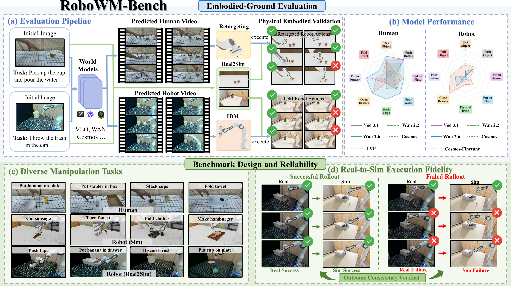
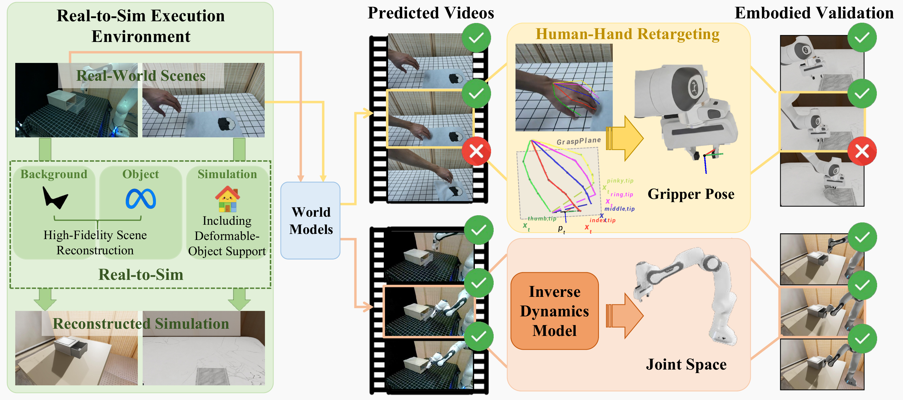
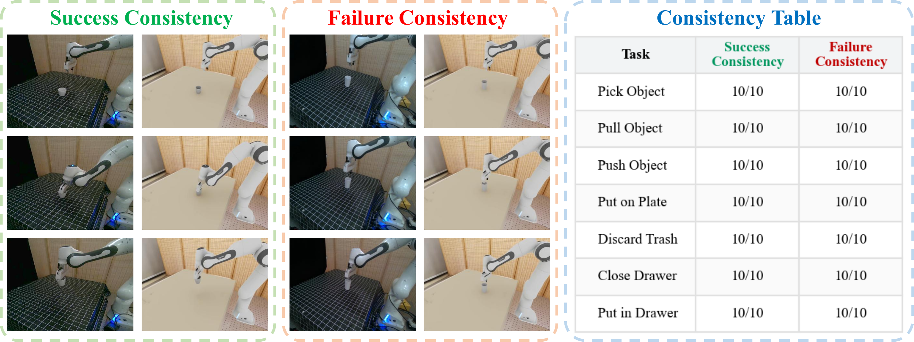

RoboWM-Bench
Overview

RoboWM-Bench is a manipulation-centric benchmark for evaluating video world models under embodied execution. (a) Given an initial scene observation and task description, world models generate manipulation videos with human hands or robot arms. The predicted behaviors are converted into embodied action sequences and validated in simulation through real-to-sim scene reconstruction. (b) RoboWM-Bench spans a diverse suite of manipulation tasks with varying interaction dynamics, object properties, and temporal horizons. (c) Performance of state-of-the-art video world models on RoboWM-Bench.
Abstract
Recent advances in large-scale video world models have enabled increasingly realistic future prediction, raising the prospect of leveraging imagined videos for robot learning. However, visual realism does not imply physical plausibility, and behaviors inferred from generated videos may violate dynamics and fail when executed by embodied agents. Existing benchmarks begin to incorporate notions of physical plausibility, but they largely remain perception- or diagnostic-oriented and do not systematically evaluate whether predicted behaviors can be translated into executable actions that complete the intended task. To address this gap, we introduce RoboWM-Bench, a manipulation-centric benchmark for embodiment-grounded evaluation of video world models. RoboWM-Bench converts generated behaviors from both human-hand and robotic manipulation videos into embodied action sequences and validates them through robotic execution. The benchmark spans diverse manipulation scenarios and establishes a unified protocol for consistent and reproducible evaluation. Using RoboWM-Bench, we evaluate state-of-the-art video world models and find that reliably generating physically executable behaviors remains an open challenge. Common failure modes include errors in spatial reasoning, unstable contact prediction, and non-physical deformations. While finetuning on manipulation data yields improvements, physical inconsistencies still persist, suggesting opportunities for more physically grounded video generation for robots.
Pipeline

Pipeline of RoboWM-Bench. Given an initial scene observation, the corresponding real-world scene is reconstructed in simulation through a real-to-sim pipeline, enabling consistent and reproducible evaluation. Predicted videos are then converted into executable robot actions through two pathways: human-centric retargeting, which estimates 3D hand poses and retargets them to robot end-effector actions, and robot-centric inverse dynamics, which predicts joint-space actions via an inverse dynamics model (IDM). The resulting actions are executed in simulation and evaluated using step-level checkers and final task success rates to measure embodied executability.
Real-to-sim Consistency

Real-to-sim consistency evaluation. Identical manipulation trajectories are executed in real-world scenes and reconstructed simulation environments, yielding consistent success and failure outcomes.
Scores
Human
Human (Task Level)
| Method | Pick Object | Push Button | Put on Plate | Pour Water | Stack Cups | Open Drawer | Put in Drawer | Fold Towel |
|---|---|---|---|---|---|---|---|---|
| Cosmos | 23% | 40% | 15% | 0% | 10% | 10% | 10% | 0% |
| Wan 2.2 | 57% | 80% | 55% | 60% | 40% | 0% | 20% | 0% |
| Veo 3.1 | 73% | 100% | 30% | 60% | 20% | 20% | 60% | 0% |
| Wan 2.6 | 83% | 100% | 70% | 80% | 80% | 80% | 80% | 40% |
| LVP | 70% | 40% | 70% | 40% | 20% | 80% | 40% | 20% |
Human (Step Level)
| Method | Put on Plate | Put in Drawer | ||||||
|---|---|---|---|---|---|---|---|---|
| contact | lift | place | contact | lift | above drawer | in drawer | close drawer | |
| Cosmos | 90% | 20% | 15% | 80% | 20% | 20% | 20% | 10% |
| Wan 2.2 | 100% | 60% | 55% | 100% | 60% | 60% | 40% | 20% |
| Veo 3.1 | 100% | 70% | 30% | 100% | 70% | 70% | 60% | 60% |
| Wan 2.6 | 100% | 75% | 70% | 100% | 80% | 80% | 80% | 80% |
| LVP | 100% | 75% | 70% | 100% | 70% | 60% | 50% | 40% |
Robot
Robot (Task Level)
| Method | Close Drawer | Pick Object | Push Object | Push Button | Put on Plate | Discard Trash | Pull Object | Put in Drawer |
|---|---|---|---|---|---|---|---|---|
| Cosmos | 0% | 10% | 10% | 10% | 10% | 0% | 0% | 0% |
| Wan 2.2 | 30% | 10% | 0% | 0% | 0% | 0% | 0% | 0% |
| Wan 2.6 | 50% | 20% | 40% | 40% | 20% | 10% | 0% | 0% |
| Veo | 20% | 20% | 10% | 20% | 10% | 0% | 0% | 0% |
| Cosmos-FT | 90% | 50% | 50% | 60% | 40% | 30% | 40% | 20% |
Robot (Step Level)
| Method | Put on Plate | Put in Drawer | ||||||
|---|---|---|---|---|---|---|---|---|
| contact | lift | place | contact | lift | above drawer | in drawer | close drawer | |
| Cosmos | 30% | 10% | 10% | 10% | 0% | 0% | 0% | 0% |
| Wan 2.2 | 20% | 0% | 0% | 0% | 0% | 0% | 0% | 0% |
| Wan 2.6 | 40% | 20% | 20% | 30% | 0% | 0% | 0% | 0% |
| Veo | 40% | 10% | 10% | 30% | 0% | 0% | 0% | 0% |
| Cosmos-FT | 60% | 40% | 40% | 60% | 20% | 20% | 20% | 20% |
BibTeX
@article{robowmbench2026,
title={RoboWM-Bench},
author={TBD},
journal={TBD},
year={2026},
url={https://YOUR_DOMAIN.com/YOUR_PROJECT_PAGE}
}